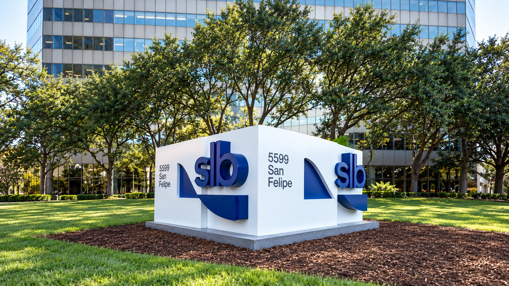

SLB’s sales rise 6%, but acquisitions explain much of the growth
The oilfield-services group reports $9.45 billion in quarterly revenue and forecasts about $10 billion next quarter, with regional disruption still clouding its outlook.

SLB reported higher quarterly sales Friday as oilfield activity recovered across several regions, but the headline growth rate overstated the improvement in its existing business. Revenue reached $9.45 billion, up 6% from a year earlier. Excluding the impact of its ChampionX acquisition, the increase was 2%, a more restrained measure of underlying demand for its services.
The distinction matters for an industry whose recovery depends on customers committing money to drilling, production and reservoir work. An acquisition brings additional sales into the accounts even if the wider market barely grows. SLB's latest results show both effects at work: a larger corporate footprint and improving activity, with continuing pressure on some measures of profitability.
A recovery from the previous quarter is clearer than a yearly rebound
Adjusted earnings were 64 cents a share, up from 55 cents in the second quarter but below 69 cents a year earlier. Under generally accepted accounting principles, earnings were 49 cents a share. Net income attributable to SLB was $735 million, compared with $739 million a year earlier. Sales growth therefore did not translate into higher annual net profit.
The different earnings measures serve different purposes. Adjusted figures can help isolate operations from identified charges, but investors still need to understand the expenses left out. Comparing the adjusted result with the previous quarter also answers a different question from comparing it with last year. Our guide to reading earnings reports explains why those baselines should remain separate.
North American revenue increased 24% from a year earlier, or 13% excluding the acquisition's impact. The Middle East and Asia reporting region rose 9% from the second quarter but remained 6% below the prior year. Neither number should be confused with the narrower Middle East business, which management said grew 13% sequentially as activity gradually recovered.
The next quarter still depends on disruption easing
In its earnings-call remarks, SLB projected fourth-quarter revenue of approximately $10 billion, up 5% to 7% sequentially. That outlook assumes Middle East revenue remains near $1.9 billion, about 83% of the amount recorded there in the fourth quarter of 2025. The forecast incorporates a continuing regional shortfall rather than assuming an immediate return to normal operations.
Management also expects the adjusted earnings-before-interest, tax, depreciation and amortization margin to expand by 100 to 150 basis points. That means an improvement of one to 1.5 percentage points. These are company expectations. The combination of anticipated revenue growth and margin expansion describes the intended operating improvement, while the regional assumption shows a major dependency behind it.
SLB points to deepwater projects, production-restoration work and customers seeking more geographically diverse supplies as sources of future activity. Its prepared remarks also forecast that Venezuela revenue would more than double this year. Such projects can support demand over several quarters, but contracts and management expectations are not the same as cash already collected from completed work.
Oilfield-services companies occupy a different position from producers selling crude. Their income depends on the work customers authorize, the equipment supplied and the services delivered. A higher oil price can support investment decisions without instantly turning into additional service revenue. The transmission of an oil shock through the economy therefore has several stages between a price move and a contractor's financial results.
Cash generation is the other test
SLB generated $1.51 billion in operating cash flow and reported $828 million in free cash flow during the quarter. Those figures offer another way to assess its ability to finance investment and shareholder distributions. They should be read alongside profit because collecting customer payments, carrying inventories and paying suppliers can move cash at a different pace from reported earnings.
Our explanation of free cash flow and its definitions sets out why the calculation and period both matter. One quarter's cash generation does not establish a permanently higher run rate. Equally, a slower cash quarter would need to be examined for timing effects before being treated as evidence that the underlying business had deteriorated.
Friday's report gives investors a concrete comparison for the next release: roughly $10 billion of projected sales, an expected margin improvement and a Middle East business still operating below its year-earlier level. Delivering those outcomes would make the recovery more visible. The acquisition-adjusted figures will remain essential to establishing how much comes from stronger demand rather than the size of the company itself.
Sources and methodology
Sources checked October 23, 2026. Reported findings and company or regulatory statements are attributed in the text; discussion of financial implications is editorial analysis. The generated cover is illustrative.